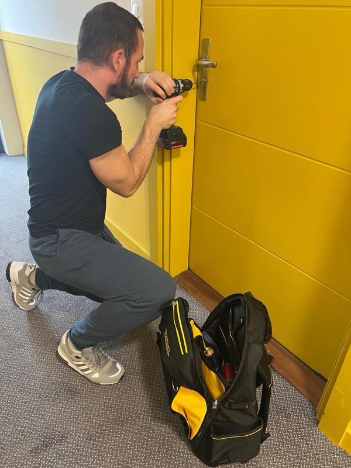

Serrurerie Colombes
Je me présente, Valérian Habillon, artisan serrurier domicilié sur Colombes. Interventions rapides, y compris en urgence, avec le soin d’un professionnel indépendant.
Prestations :
- Ouverture de porte (claquée, clé perdue, cassée…)
- Remplacement de cylindre et/ou serrure
- Blindage de porte
- Pose de poignées blindées
- Sécurisation après effraction
Devis gratuit.
- Forfait ouverture porte claquée : 160€
- Forfait ouverture de porte fermée (perte de clé, dysfonctionnement de serrure, etc) : 230€
- Changement de cylindre/serrure : Sur devis.
- Forfait ouverture porte claquée : 160€
- Forfait ouverture de porte fermée (perte de clé, dysfonctionnement de serrure, etc) : 230€
- Changement de cylindre/serrure : Sur devis.
Ces tarifs ne prennent pas en compte les éventuels travaux supplémentaires engendrés par l'ouverture de la porte.
Zone d’intervention : Colombes et alentours : 92, 93, 95, 78, Paris.
📞 07 44 43 69 03
📱 Contact possible via WhatsApp : 07 44 43 69 03
07 44 43 69 03

📱 Contact possible via WhatsApp :
07 44 43 69 03
SIRET : 82037989900025